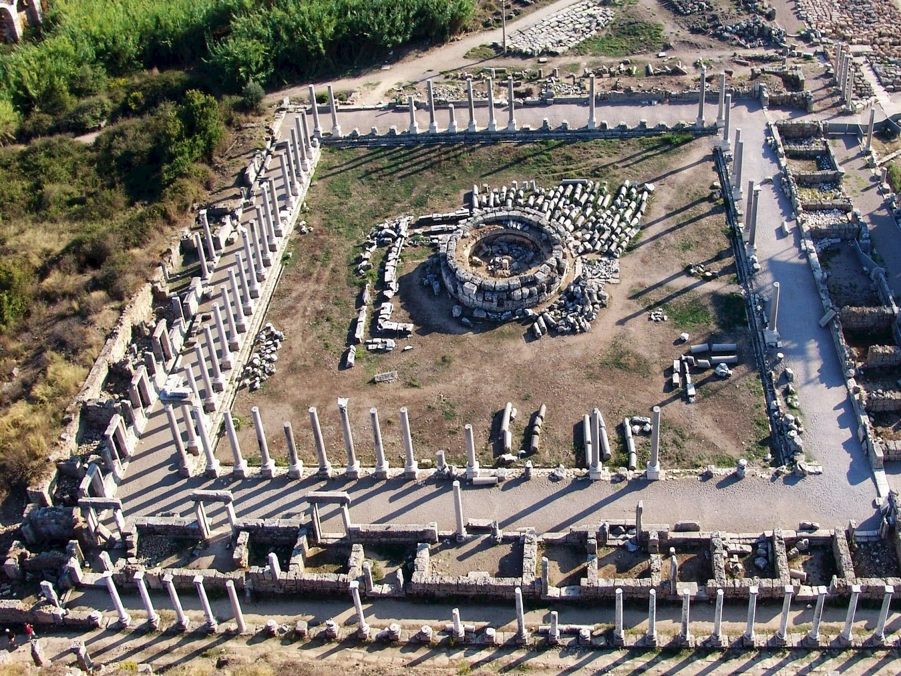
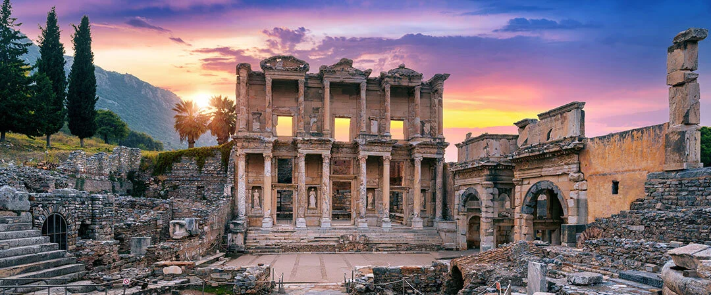
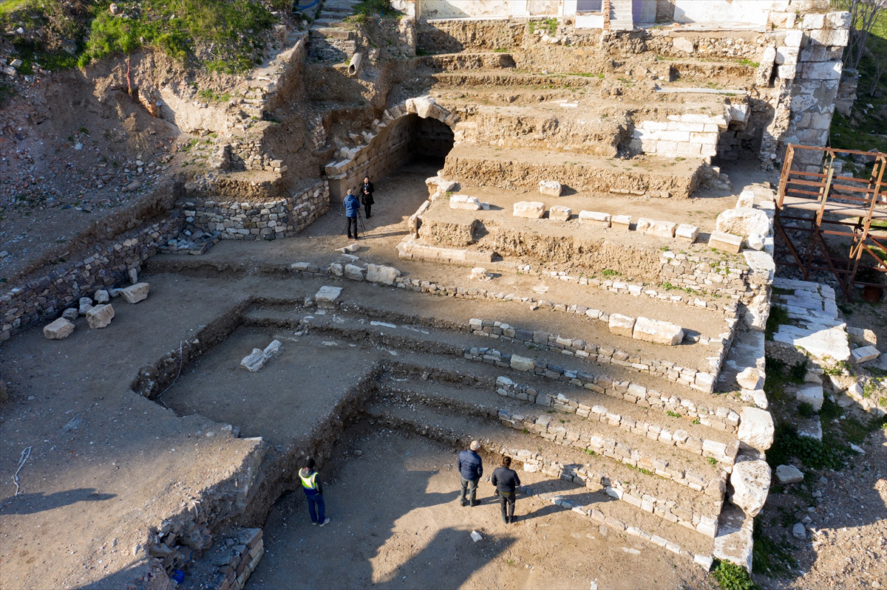
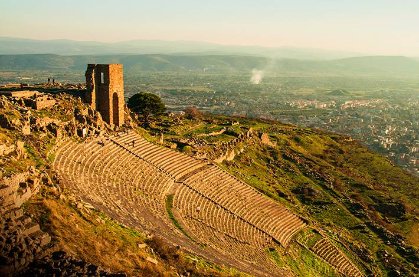

İzmir’deki Tarihi Yerler

Agora Ören Yeri
İzmir’in merkezinde yer alan Roma Dönemi'ne ait Agora, antik kentin ticaret ve sosyal yaşamının merkeziydi. Günümüzde arkeolojik kazılarla ortaya çıkarılan yapılar ziyaretçilere tarihsel bir yolculuk sunar.
Adres: Namazgah, 920. Sk. No:42, Konak/İzmir
Ziyaret Saatleri: Her gün 08:30 – 17:30
Giriş: Ücretli (Tam: 100 TL)
Müze Kart: Geçerli

Efes Antik Kenti
Dünyaca ünlü Efes Antik Kenti, Artemis Tapınağı ve Celsus Kütüphanesi gibi yapılarıyla İzmir’in tarihsel mirasının en önemli parçalarından biridir.
Adres: Acarlar, Efes Harabeleri, Selçuk/İzmir
Ziyaret Saatleri: Her gün 08:30 – 19:00
Giriş: Ücretli (Tam: 700 TL)
Müze Kart: Geçerli

Kadifekale
Helenistik dönemde inşa edilen Kadifekale, İzmir'e tepeden bakan tarihi bir kaledir. Aynı zamanda muhteşem bir manzara ve tarihi atmosfer sunar.
Adres: Kadifekale Mah., Konak/İzmir
Ziyaret Saatleri: Her gün 09:00 – 18:00
Giriş: Ücretsiz
Müze Kart: Gerekli değil

Smyrna Tiyatrosu
İzmir’in antik geçmişine ışık tutan Smyrna Tiyatrosu, Roma dönemine ait kalıntılarıyla dikkat çeker. Tiyatronun sahne binası ve oturma alanları hâlâ görülebilir durumdadır.
Adres: Namazgah, Konak/İzmir
Ziyaret Saatleri: Her gün 08:30 – 17:00
Giriş: Ücretsiz
Müze Kart: Gerekli değil

Bergama Akropolü
UNESCO Dünya Mirası Listesi'nde yer alan Bergama, antik çağların en önemli bilim ve kültür merkezlerinden biridir. Tiyatro, Athena Tapınağı ve Kütüphane gibi yapılar görülmeye değerdir.
Adres: Bergama Akropolü, Bergama/İzmir
Ziyaret Saatleri: Her gün 08:00 – 18:30
Giriş: Ücretli (Tam: 300 TL)
Müze Kart: Geçerli